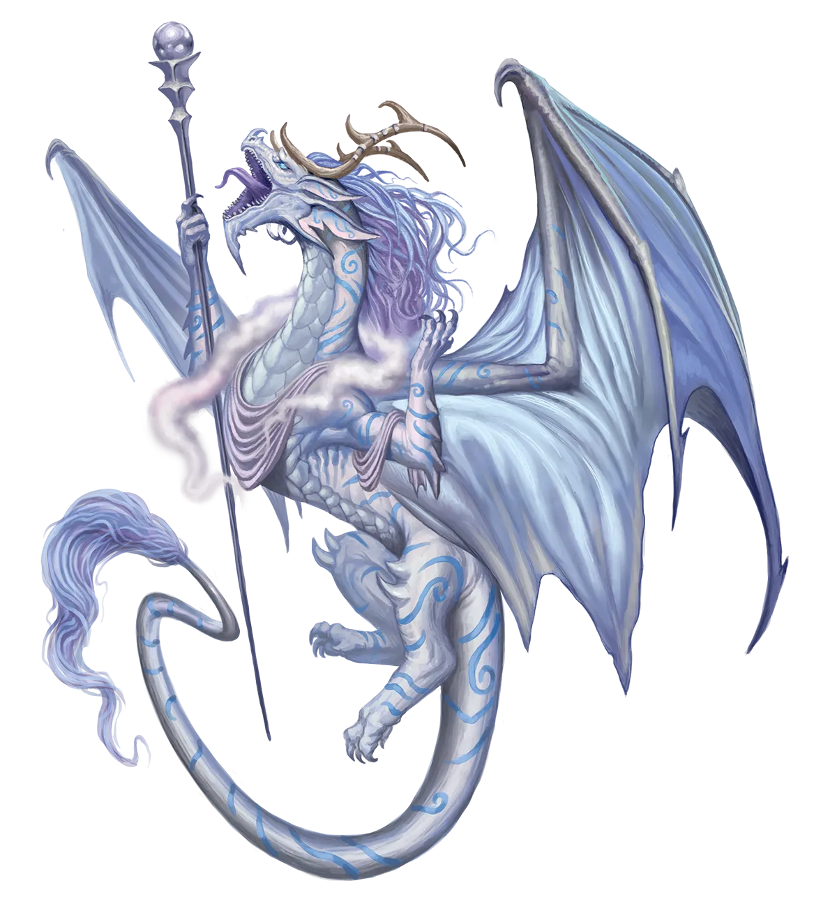
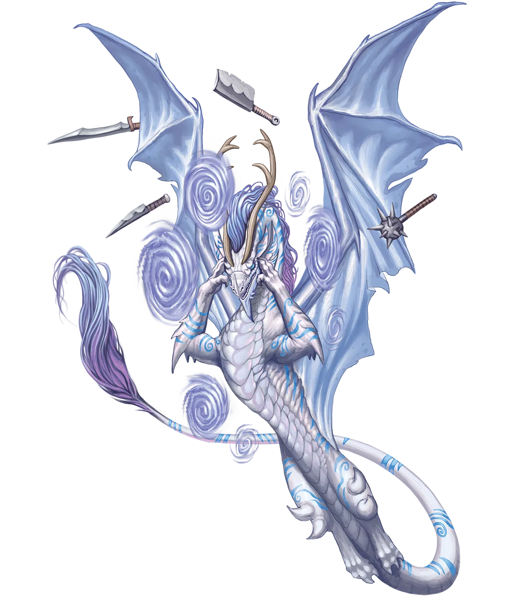

不再屈服
大多数族裔认为梦境转瞬即逝，但梦境龙深感世间万物，无有比梦境更恒久或更真实的事物。一个人的行为、情感乃至记忆都会随时间流逝，但真正的梦境能持续一生，至少除非被外力碾碎。梦境龙双亲将孩子送去与永恒表亲共居一段时间，关键原因之一正是为了让它们领悟此类真知――了解其他生物如何与自己的梦境互动。何者能孕育出真正的梦境，而非一时的兴致？逐梦者愿为实现梦境付出何等代价？而又有何物，足以连梦境也一并扼杀？
梦境龙 Dream Dragon |
|
|
梦境龙是梦境的漫游者、追猎者、统治者与护卫魔，因此，或许有人会觉得，会有龙类选择施行光恒仪式这件事简直匪夷所思。诚然，它们与星界龙类一样，都不愿放弃自己作为位面自封统治者的传统角色，这最初也确实导致少有人接纳这一仪式。事实上，有传言说，第一批施行光恒仪式的梦境龙并非为了自己，而是为了监视永恒梦魇龙。据传，梦魇龙正泄露到物质位面，并可能在酝酿一个可能波及梦境的阴谋。无论这个说法是否属实，第一批永恒梦境龙确实前往了物质位面，并将自己的所见所感回报给了秉持传统主义的同胞。它们在那里发现的经验与习得的事物，改变了它们对梦境、以及那始终流转的维度中孕育出各色梦境泡影的沉睡者本质的看法。传统主义龙类发现，这些新观点不仅言之成理，而且新颖而富有洞见。虽然这本身并未说服多少龙类施行光恒仪式，但“在返回‘统治’梦境之前，先到物质位面闯荡一番”的想法却越来越流行。随之而来的，是对施行仪式的需求不再那么迫切。传统主义龙类只需在物质位面短暂生活一段时间，便能获得永光龙类的视角，而无需承受仪式固有的缺点。最终，这种局面演变成一种安排：某些永恒梦境龙家族和社会群体永久迁居物质位面，建立冒险者公会与其他基础设施，部分资金由传统主义梦境龙资助。然后，传统派会将他们的孩子送去作为被监护者寄养，由永恒梦境龙抚养一段时间后再送回家中。在实践中，这种安排通常效果良好，促成了所有龙类血统中独一无二的、传统主义与永恒梦境龙之间的互动。有时，年轻的梦境龙会喜欢上寄养的家庭并选择留下，往往自己施行光恒仪式。然而，这并不会让它们的双亲特别高兴，而一个热衷于将寄养子女转化为永恒生活方式的永恒梦境龙，可能会发现自己很快就失去了这种赞助。 在不向年轻传统主义梦境龙展示物质位面生活的同时，永恒梦境龙热爱冒险；越是天马行空、变化多端越好。在选择同伴时，它们通常不看性格、理念，甚至不看技能组合。相反，它们想知道的是潜在同伴的驱动力以及他们人生中最宏大的梦境。那些心怀远大梦想的人能赢得龙类的认可，只要这梦想不是特别令人反感。此外，对于冒险者来说，在追寻梦想途中遭遇重大困难时，能有一位永恒梦境龙盟友坚定地站在身边，是所能期盼的最好助力之一。永恒梦境龙倾向于选择那些能让它们创新、适应并构想新战略的职业。这不仅仅包括吟游诗人和法师这类与传统魔法相关的职业，也包括奇械师这种以截然不同方式构想的职业。 不再屈服 大多数族裔认为梦境转瞬即逝，但梦境龙深感世间万物，无有比梦境更恒久或更真实的事物。一个人的行为、情感乃至记忆都会随时间流逝，但真正的梦境能持续一生，至少除非被外力碾碎。梦境龙双亲将孩子送去与永恒表亲共居一段时间，关键原因之一正是为了让它们领悟此类真知――了解其他生物如何与自己的梦境互动。何者能孕育出真正的梦境，而非一时的兴致？逐梦者愿为实现梦境付出何等代价？而又有何物，足以连梦境也一并扼杀？ 梦境龙特质 Dream Dragon Traits 你出身于一脉作为幻梦境主宰与守护者的梦境龙世系。 |
  |